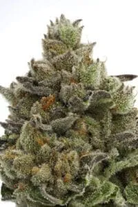
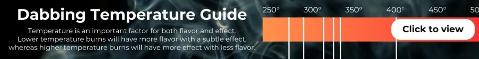
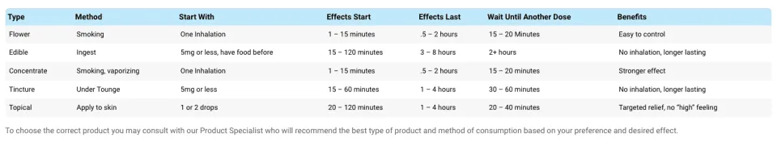

Intro to Cannabis 101 and Things to Know about Cannabis
Whether you’re new to cannabis, returning after some time away, or simply looking to better understand today’s products, Cannabis 101 is a great place to start. This introductory guide covers the fundamentals of cannabis in clear, easy to understand language, helping you learn about cannabinoids, terpenes, common product types, consumption methods, responsible use, and what to consider when choosing cannabis. At Cape Cod Cannabis, we believe that better information leads to more confident decisions, and our knowledgeable team in Wellfleet is always here to help answer your questions along the way.
A quick 2-minute cannabis introduction for you...
Click the Intro to Cannabis 101 links below to view:
Intro to Cannabis 101 (English PDF)
Intro to Cannabis 101 (Spanish PDF)
Intro to Cannabis 101

What Should I Know About Cannabis?
Cannabis is first of all a plant, and today it comes in many different varieties and forms. What is unique about cannabis is the combination of its essential oils: terpenes and cannabinoids. While terpenes can be found on many other plants, only the cannabis plant has cannabinoids.
Cannabinoids have a medicinal effect by imitating compounds our bodies naturally produce (endocannabinoids). Together the cannabinoids and terpenes hold most of the influence when it comes to the effects of cannabis.
There are over 85 cannabinoids in cannabis, but the main two that you should know about are THC and CBD:
THC
(DELTA-9-TETRAHYDROCANNABINOL)
THC is responsible for the psychoactive (“stoned”) effects. Commonly experienced effects include euphoria, relaxation, and “giggles”.
CBD
(CANNABIDIOL)
CBD has little to no psychoactive effects and can balance or counteract the anxiety produced by THC. CBD can reduce anxiety, provide pain relief, suppress nausea, support cardiovascular health, and have anti-inflammatory properties.
What are cannabis Strain Types?
SATIVA
- Increases energy, focus, elevates mood, increases creativity.
- Consumed during Daytime.
INDICA
- Relaxes and reduces stress, pain, and anxiety, promotes sleep and reduces inflammation.
- Consumed at Nighttime.
Remember: Most cannabis strains are HYBRIDS and their effect fall somewhere between the two.
All products vary in their strength of effect on body and mid. Each person is unique and may experience cannabis differently. Read the packaging label for product laboratory results and consumption suggestions. Always start with a small dose and wait until getting another one.
What are Terpenes?
We also mentioned terpenes which are aromatic oils that distinguish cannabis varieties with smell and flavor, but they also affect the human body in a variety of ways and contribute to the Entourage Effect.
Did you know? These are the 5 things that are chemically similar to a cannabis high: Catnip; Running; Love; Chocolate; Cheese.
Most common terpenes are Pinene, Myrcene, Limonene, Caryophyllene, Linalool, Humulene.
Cannabis can be classified into two categories based on its effects:
WHICH CANNABIS PRODUCTS TO CHOOSE?
The effects of the cannabis products will vary significantly depending on the individual as each person metabolizes, processes and experiences marijuana differently. Before making a purchase, you should understand your desired effect, its lengths and strength of impact as well as the overall experience that you are looking for. Our expert Product Specialists will help you find the right product based on the following factors:
- Type: we offer flower, edibles, vaporizers, concentrates, topicals and tinctures – all of which are consumed in different ways.
- Dosage: products come in a variety of strengths and dosages. You might want to start with a low dosage, especially if you are new to cannabis.
- Effect: the main groups of cannabis strains are Indica (sedative/relaxing), Sativa (invigorating/uplifting) and Hybrids (fall in between Indica and Sativa). Keep in mind that terpenes will also influence the effect of the product.
UNDERSTANDING THE DAILY PURCHASE LIMIT IN MA FOR RECREATIONAL CANNABIS
Massachusetts has a well-defined legal framework for recreational cannabis purchases to ensure consumer safety, responsible usage, and regulatory compliance. The daily legal limit is 56 grams (2 ounces) of flower, but this can be distributed across various cannabis products.
Click here for more information and an online calculator to determine your daily purchase per category.
WHAT TYPE OF CANNABIS PRODUCT AND METHOD OF USE IS RIGHT FOR ME?
There are many ways to use cannabis, and its effect may vary depending on the method. If you are not sure what works best for you – ask our Product Specialist about the products and methods of use.
| Type | Method | Start With | Effects Start | Effects Last | Wait Until Another Dose | Benefits |
|---|---|---|---|---|---|---|
| Flower | Smoking | One Inhalation | 1 – 15 minutes | .5 – 2 hours | 15 – 20 Minutes | Easy to control |
| Edible | Ingest | 5mg or less, have food before | 15 – 120 minutes | 3 – 8 hours | 2+ hours | No inhalation, longer lasting |
| Concentrate | Smoking, vaporizing | One Inhalation | 1 – 15 minutes | .5 – 2 hours | 15 – 20 minutes | Stronger effect |
| Tincture | Under Tounge | 5mg or less | 15 – 60 minutes | 1 – 4 hours | 30 – 60 minutes | No inhalation, longer lasting |
| Topical | Apply to skin | 1 or 2 drops | 20 – 120 minutes | 1 – 4 hours | 20 – 40 minutes | Targeted relief, no “high” feeling |
To choose the correct product you may consult with our Product Specialist who will recommend the best type of product and method of consumption based on your preference and desired effect.

WHAT IS THE CORRECT CANNABIS DOSAGE?
All products vary in their strength of effect on body and mind, and cannabinoid profile. Strain specific details are labeled on all products after they are tested by certified third-party laboratories. It is important that anyone using marijuana is careful in finding the appropriate dose for their desired effects. Each person is unique and may experience cannabis differently.
Before using cannabis re-read the laboratory test results and instructions on the packaging label. This will help you understand how strong the product is and what is the recommended method and dosage of use. It is always best to start with a small dosage and wait a few hours to realize the full effects. Most products come in a variety of strengths and dosages, so start low and go slow, especially if you are new to cannabis or trying out a new product.
Remember:
- Wait 15-20 minutes before taking another inhalation of a flower or
- For sublingual use wait 30-60 minutes before taking another
- Always have some food before taking an Edible and remember to keep your dose within 5mg. Never rush for an additional dose, wait at least 2 hours before consuming more.
Always note the time when you used the product to keep track of the onset and duration.
If you are not into math: cannabis is often in grams or ounces. To better understand the weight of our products please use the following conversion table:
3.5g ≈ 1/8 oz. | 7g ≈ 1/4 oz. | 14g ≈ 1/2 oz. | 28g ≈ 1 oz. | 56g ≈ 2 ozs.
Note: All conversions are approximate and have been rounded up or down to the nearest whole number.


Important Information about Cannabis
All information contained herein and, on our website, www.capecodcannabis.com, is for educational purposes only. None of this information should be interpreted as medical or treatment advice for any person or condition. Always consult with a licensed physician in all matters regarding your health.
The information provided on this website does not, and is not intended to, constitute legal advice; instead, all information, content, and materials available on this site are for general informational purposes only. Information on this website may not constitute the most up-to-date legal or other information. This website contains links to other third-party websites.
Such links are only for the convenience of the reader, user or browser; the ABA and its members do not recommend or endorse the contents of the third-party sites.
- ALCOHOL. Do not mix cannabis with alcohol.
- CONSUMPTION. Cannabis use is allowed only in a private space where smoking and/or vaping is allowed. Consumption is prohibited in or around the Cape Cod Cannabis location. Do not consume in public areas as it is prohibited by State and Local laws. Consumption and possession of cannabis on the territory of the Cape Cod National Seashore and the Cape Cod Rail Trail is prohibited. Violators will be put on “blacklist” and would not be able to shop at Cape Cod Cannabis locations in the future.
- DIVERSION. Consumer may not sell marijuana to any other individual or distribute to minors, doing so may impose a fine and/or imprisonment; Violators will be put on “blacklist” and would not be able to shop at Cape Cod Cannabis locations in the future. Any unused, excess, or contaminated product can be returned to the dispensary for disposal.
- DOSAGE always speaking with your doctor about your medical history and the medications you are taking before using cannabis. Consult with a physician regarding dosage. For consumers who are new to cannabis we recommend starting with smallest dosage according to package directions and allowing sufficient time to pass to allow effects to be felt, based on the method of consumption or application. Some people report dry mouth, dizziness or paranoia when using cannabis. While many use cannabis to combat anxiety, it may create anxiety in others. Responsible dosing can help you avoid unpleasant experiences with cannabis.
- DRIVING & MACHINERY cannabis can slow your reaction time. Under M.G.L. c90, §24 it is illegal to drive or operate machinery under the influence of marijuana. When driving, keep your cannabis in a secure area of your vehicle, out of reach of the driver and passengers.
- FOOD. Do not consume cannabis infused products (edibles) on an empty stomach. We recommend eating a full meal before consuming cannabis infused products as it helps lower the intensity of effects. The undesirable effect will subside with time.
- LIMITS. You may purchase up to 2 ounces of cannabis flower or up to 10 grams of cannabis concentrate per day. Possessing more than the legal limit (2 oz. of Flower or each flower equivalency) outside of your place of residence may be penalized up to 6 months imprisonment or a $500 fine.
- PENALTIES. For information regarding penalties for possession or distribution of marijuana in violation of Massachusetts law please refer to M.G.L. c94G, §13. Selling cannabis to others is illegal and a first offense (under 50 lbs.) can be punishable up to 2 years of imprisonment or a $5,000 fine.
- PREGNANCY certain health risks may be associated with consumption of cannabis while pregnant, breastfeeding or planning to become pregnant.
- STATE BORDER. Stay in Massachusetts and do not cross state lines with cannabis products.
- STORAGE. Store cannabis securely, away from children and pets. Keep cannabis in the original child-proof packaging and away from other food items. To keep cannabis fresh, store in dark, dry and cool place.
- TOO MUCH OR TOO STRONG? Anxiety and paranoia may accompany accidental overdose. It is best to stay calm and remain in a comfortable and safe place.
- TOLERANCE, DEPENDENCE AND WITHDRAWAL. Although it is generally accepted that cannabis is not a physically addictive substance, a psychological dependence is possible with excessive usage of any substance.
Please consume cannabis and cannabis products at your own risk. If you or someone you know is experiencing symptoms of substance abuse, consider talking to someone, your physician our counselor, about the drug use.
Some examples of symptoms and signs of substance abuse are:
- Neglecting responsibilities at school, work, or home because of drug use.
- Using drugs under dangerous conditions or taking risks while high.
- Built up a drug tolerance.
- Taking drugs to avoid or relieve withdrawal symptoms. Symptoms may include nausea, sweating, shakiness, and extreme anxiety.
- Causing problems in relationships.
- Abandoning previously enjoyed activities.
- Continuing using drugs, despite knowing it is hurting you.
- Losing control over drug use, may want to stop using, but feel powerless.
- Experiencing legal trouble, such as arrests for disorderly conduct, driving under the influence, or stealing to support a drug habit.
- If you or someone you know is exhibiting signs or symptoms of substance abuse please contact the Massachusetts substance abuse helpline at (800) 327-5050 for further assistance
DO’s
- DO take your cannabis products directly from the dispensary to a private residence.
- DO keep your cannabis sealed and out of reach while in your motor vehicle. Cannabis cannot be transported once opened.
- DO store cannabis in a safe place away from direct sunlight and out of reach of any children or pets.
- DO consult your physician if you have any medical conditions before using cannabis.
DON’Ts
- Do NOT consume cannabis in public.
- Do NOT drive or operate heavy machinery while under the influence of cannabis.
- Do NOT consume cannabis with alcohol. Cannabis may increase the intensity of intoxication.
- Do NOT consume cannabis on National Seashore and bike trail.
- Do NOT travel out of the state of Massachusetts with your cannabis.
- Do NOT engage in the diversion of any marijuana products.
How Much Weed Can I Buy at a Time?
2 ounces of flower or 10 grams of concentrate. Up to 1000mg of edibles at a time, which can be up to 200 milligrams of THC. Please visit our Understanding the Daily Purchase Limit in MA page to calculate.
How Much Am I Allowed to Possess?
You’re allowed to hold up to ten ounces of marijuana in your home. If you’re on the street, the 2 ounce or 10 gram rule still applies. You also can’t go out in public, or drive around in your vehicle, with an open container of weed. This will earn you a fine of $500, so respect the law and keep it sealed up.
EXPERIENCE LOG Use a similar template, like the one below, to record your experience using different cannabis strains and products (line 1 is filled as an example):
1 | Date: 2/1/2021 | Product: Flower | Strain/Type: Bubba Kush (Indica) | Method of Use: Smoking |
Dosage: 2 puffs | Effects: sleepy, happy, hungry | Onset: 3 mins | Duration: 1 hr | |
Notes: sweet with a taste of coffee and chocolate | ||||
2 | Date: | Product: | Strain/Type | Method of Use: |
Dosage: | Effects: | Onset: | Duration: | |
Notes: | ||||
3 | Date: | Product: | Strain/Type | Method of Use: |
Dosage: | Effects: | Onset: | Duration: | |
Notes: |
IMPORTANT INFORMATION ABOUT CANNABIS:
Marijuana and Marijuana Products have not been analyzed or approved by the FDA, therefore there is limited information on side effects. There may be health risks associate with using marijuana or marijuana products. All marijuana and marijuana products should be kept away from children.
Under M.G.L. c90, §24 it is illegal to drive or operate machinery under the influence of marijuana.
We always recommend speaking with a physician regarding dosage. For consumers who are new to cannabis er recommend starting with smallest dosage according to package directions and allowing sufficient time to pass to allow effects to be felt, based on the method of consumption or application.
Tolerance, dependence and withdrawal have not been researched therefore please consume marijuana and marijuana products at your now risk.
If you or someone you know is exhibiting signs or symptoms of substance abuse please contact the Massachusetts Substance Abuse Helpline at 800 327 5050 for further assistance.
Consumer may not sell marijuana to any other individual, doing so may impose a fine and/or imprisonment; likewise registered qualifying patients may not distribute marijuana to any other individual, and that they must return unused, excess, or contaminated product to the RMD from which they purchased the product, for disposal.
For information regarding penalties for possession or distribution of marijuana in violation of Massachusetts law Please refer to M.G.L. c94G, §13.
For additional educational materials please refer to our website www.CapeCodCannabis.com
Please consume cannabis products responsibly.
Cannabis is for use only by adults 21 years of age or older. All information contained herein and, on our website, www.capecodcannabis.com, is for educational purposes only. None of this information should be interpreted as medical or treatment advice for any person or condition. Always consult with a licensed physician in all matters regarding your health.
Cape Cod Cannabis Recreational Dispensary is located at 1446 US-6, Wellfleet, MA 02667. We’re conveniently located along Route 6 in the South Wellfleet shopping plaza, designed like a rest stop, for easy entry and exit with plenty of free parking, includes a bakery, liquor store, and U.S. Post Office for your convenience. Click here for directions.
Cape Cod Cannabis is a licensed adult-use recreational dispensary serving residents and visitors alike in Barnstable, Bourne, Brewster, Chatham, Dennis, Eastham, Falmouth, Harwich, Hyannis, Mashpee, Orleans, Provincetown, Sandwich, Truro, Wellfleet, Yarmouth and beyond.
If you’re searching for weed near me on Cape Cod, Cape Cod Cannabis is an adult-use recreational dispensary located at 1446 US-6 in Wellfleet, Massachusetts, in the South Wellfleet area of the Outer Cape. We’re open daily and offer a wide selection of recreational cannabis products. Customers 21+ can shop in-store or order online for convenient pickup with valid ID.
We welcome anyone 21 years of age or older with a valid Government ID (e.g., Drivers License, Passport, etc.) to verify your age upon entry. Unfortunately, we cannot accept expired MA ID’s unless, when already renewed, you bring the expired MA ID with the actual MA RMV documentation for the renewal.
Unfortunately, we cannot accept any out-of-state or International ID’s that are expired.
Note: We respect if you are wearing a mask when you enter but please know that, per regulations, we have to properly identify everyone who enters. You will be asked to momentarily remove (or lower) your mask for identification purposes. We thank you for your cooperation and understanding.
If it’s your first time visiting a dispensary in Massachusetts, the process is simple and welcoming. When you arrive, you’ll be asked to show a valid government-issued ID to confirm you are 21 or older. After check-in, you can browse the menu or speak with a knowledgeable staff member (often called a budtender) who can help you choose products based on your preferences and experience level.
At Cape Cod Cannabis, you’ll find a variety of options including flower, pre-rolls, edibles, vapes, tinctures, topicals, CBD and concentrates. Our budtenders are here to answer questions and make recommendations, whether you’re looking to relax, sleep better, or try cannabis for the first time. Once you’ve made your selection, you’ll proceed to checkout—we accept cash and debit payment options. We also have an on-site ATM for your convenience.
Overall, expect a safe, regulated, and educational experience designed to help you feel comfortable and informed…and NOT rushed.
We also offer an online assistant (bottom left side of the website) to ask questions and lead you in the right direction. Please give us a call at (774) 383-3133 if you have further questions.

2026 Cape Cod Choice Awards: Best CBD Store Winner | Top 3 Best Cannabis Dispensary
Customers frequently mention our knowledgeable and friendly team, wide cannabis selection, personalized service, welcoming atmosphere, convenient Route 6 location, and overall dispensary experience. Read our recent customer reviews to see feedback directly from customers.
Yes. Visit our Leave Your Review page to share your experience on Google or Yelp.
We’re open 7 days a week. Please check our hours for the most up-to-date hours, including holiday schedules.
Cape Cod Cannabis Dispensary in Wellfleet offers the largest selection of quality flower, pre-rolls, seeds, edibles, vapes, concentrates, syrups / tinctures, CBD, topicals, pet drops and more at the BEST prices on Cape Cod…something for every preference and experience level. Always worth the trip!
Yes. As of April 19, 2026, Massachusetts law allows you to purchase up to 2 ounces of flower (Recreational) or its equivalent in other cannabis products per day.
Click here to visit our “Understanding the Daily Purchase Limit in MA” page for more information and to calculate your daily purchase.
Recreational = 56 grams (flower) a day is the legal MA limit, which can constitute:
• Flower: Up to 56 grams (2 ounces).
• Edibles: A total of 1000mg THC, which is roughly 10 packs of 20 servings, each serving containing 5mg of THC.
• Concentrates: Up to 10 grams of cannabis concentrates, such as wax, shatter, or live resin (equivalent to 10 x 1g or 20 x 0.5g packages).
• Tinctures: A total of 10000mg = approximately 10 x 1000mg bottles, depending on the product’s potency and total THC content.
• Pre-roll Joints: 56 pre-roll joints, assuming each joint contains roughly 1 gram of flower.
• Vape Cartridges: Up to 20 x 0.5g cartridges or 10 x 1g cartridges/disposables.
CBD = No Limit
Topicals = No Limit
Accessories = No Limit
Yes. Cannabis products sold at Cape Cod Cannabis are required to meet Massachusetts testing and labeling requirements before being offered for retail sale.
We accept cash, debit cards and CanPay. A regular ATM is also located on-site for your convenience.
Note: ATM and Debit transactions will incur a small third-party merchant fee.
Yes! Browse our full menu online or our Daily Offers page and place a pre-order for quick and easy pickup in-store.
Once you finalize your order, it will be filled within 15 minutes and you will be able to pick it up at the store. Changes to pre-orders can be made during checkout at the store.
PLEASE double check your phone number when entering your pre-order.
We will not keep orders placed, past our store closing, the day of when the order was placed.
For a quick overview of the different types of cannabis products, terpenes, cannabinoids, strains and more please visit Intro to Cannabis 101.
Yes! We do offer a FREE Loyalty VIP Program where you can accumulate points that will be generated automatically and tracked for you for redemption.
NOTE: Per MA Cannabis Control Commission regulations, Loyalty Points CANNOT be used for cannabis products.
Currently, you CAN use your Loyalty Points toward Cape Cod Cannabis CBD, Accessories or Merch only.
As soon as the CCC (Cannabis Control Commission) will approve or will remove the limitations on the promotions, you will be able to use these points toward all Cape Cod Cannabis products. That way you will not miss out on any points you could have accumulated if there were no limitations to begin with. In the meantime, you will get access to the VIP program.
Not a Loyalty Program VIP member? JOIN FOR FREE IN-STORE TODAY!
Already a Loyalty Program VIP member? Click here to Shop your Loyalty VIP Points.
Cape Cod Cannabis is committed to customer satisfaction when it comes to the products we sell.
RETURN POLICY
Please visit our Return Policy page for more information.
CONTACT US
If you have any questions regarding our Return Policy please contact us or call (774) 383-3133.
PRIVACY POLICY
Please visit our Privacy Policy page for more information.
CONTACT US
If you have any questions regarding this Privacy Policy please contact us or call us at (774) 383-3133.
Yes! Our apparel, hats, beanies, sweatshirts, joggers and more can be shipped to you (within the United States only) via USPS Priority. Please visit our online store Blue Tail Apparel & Merch @ www.BlueTail.cc for convenient, safe and easy shopping and we will ship your order to you!
Of course, you can always pre-order Cape Cod Cannabis apparel, accessories and merch for local pickup.
* Please note: Loyalty Points do not apply for purchases on BlueTail.cc at this time.
In-store or pre-order (non-cannabis) purchases on CapeCodCannabis.com are applicable using your Loyalty Points.